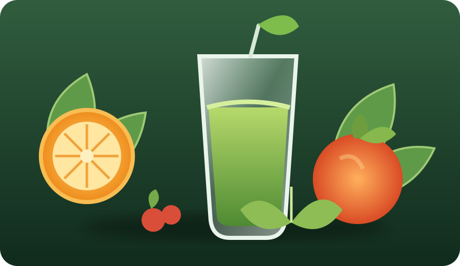

🍊
Frutas e cítricos
Combinações com laranja, limão, acerola, abacaxi, maçã, melancia e outras frutas.
Descubra combinações de frutas, verduras, legumes e hortaliças com quantidades, ingredientes e modos de preparo reunidos em um só e-book.
Por Lelington Lobo Franco

Receitas com frutas, verduras, legumes e hortaliças
O livro reúne sugestões de sucos e bebidas preparadas com ingredientes conhecidos, apresentando combinações, medidas, formas de preparo e comentários sobre componentes nutricionais.
Uma leitura para quem gosta de explorar sabores, organizar ingredientes e ampliar o repertório de receitas caseiras.
O índice percorre temas variados e apresenta receitas para diferentes momentos e preferências.
Combinações com laranja, limão, acerola, abacaxi, maçã, melancia e outras frutas.
Sugestões com couve, agrião, brócolis, cenoura, hortelã e vegetais variados.
Vitaminas, sucos energéticos, opções refrescantes e receitas com diferentes texturas.
Finalize sua compra com segurança pela página de pagamento da Hotmart.
Inclua aqui avaliações verdadeiras de compradores, com autorização para publicação. Não foram inseridos depoimentos fictícios.
O material apresenta receitas de sucos e bebidas, listas de ingredientes, quantidades, modos de preparo e comentários sobre componentes nutricionais.
Não. Alimentos e bebidas não substituem diagnóstico, tratamento, medicamentos ou acompanhamento profissional.
Não necessariamente. Ingredientes podem ter contraindicações, interações ou não ser adequados a determinadas condições, idades e fases da vida. Consulte um profissional habilitado quando necessário.
Importante: este e-book é um material informativo e culinário. Apesar do título original da obra, as receitas não devem ser anunciadas como cura, prevenção ou tratamento de doenças. O próprio livro informa que frutas e vegetais são alimentos, não medicamentos, e que suas informações não substituem consultas ou medicamentos. Algumas orientações da obra podem estar desatualizadas; avalie ingredientes e preparos com um profissional de saúde qualificado.